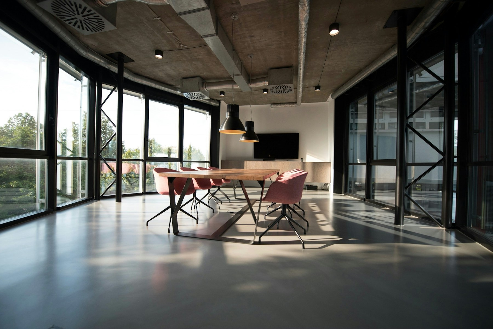

HVAC · AHU 03
Marina House · Floor 3
6 hrsB. Peters
For facility managers and building maintenance teams. Brickwise groups repeated defects in photos, reads technician notes and suggests which issues need a qualified inspection first.
 BUILDING OPERATIONS / LICENSED PHOTOGRAPHY
BUILDING OPERATIONS / LICENSED PHOTOGRAPHYReview the image and the technician note before selecting a repair.
06 HOURS / ESTIMATED WORKMarina House · Floor 3
Marina House · Core B
Ikeja Exchange · Floor 2
Ikeja Exchange · Plant
Wuse Court · Ground
Garki Place · Suite 8

An image cannot certify structural or equipment safety. A qualified professional inspects the condition and approves the work.

AI reviews building inspection images and notes, then drafts an evidence-linked repair list. Choose a sample case and inspect the evidence behind the finding.
The sample inspection observation shows water staining below AHU 03’s drain connection. The photograph does not establish whether the source is active leakage or an earlier incident.
Evidence is prepared for this demonstration. Use the source reference to check the finding.See how the source becomes a specific question, a cited observation and a next action.
An image cannot certify structural or equipment safety. A qualified professional inspects the condition and approves the work.
Evidence-linked review cases, accepted reports, downloads and a working operational register. Azure OpenAI and OpenAI service adapters are available in the source; live analysis requires your configured deployment.
Follow the development stagesAn image cannot certify structural or equipment safety. A qualified professional inspects the condition and approves the work.